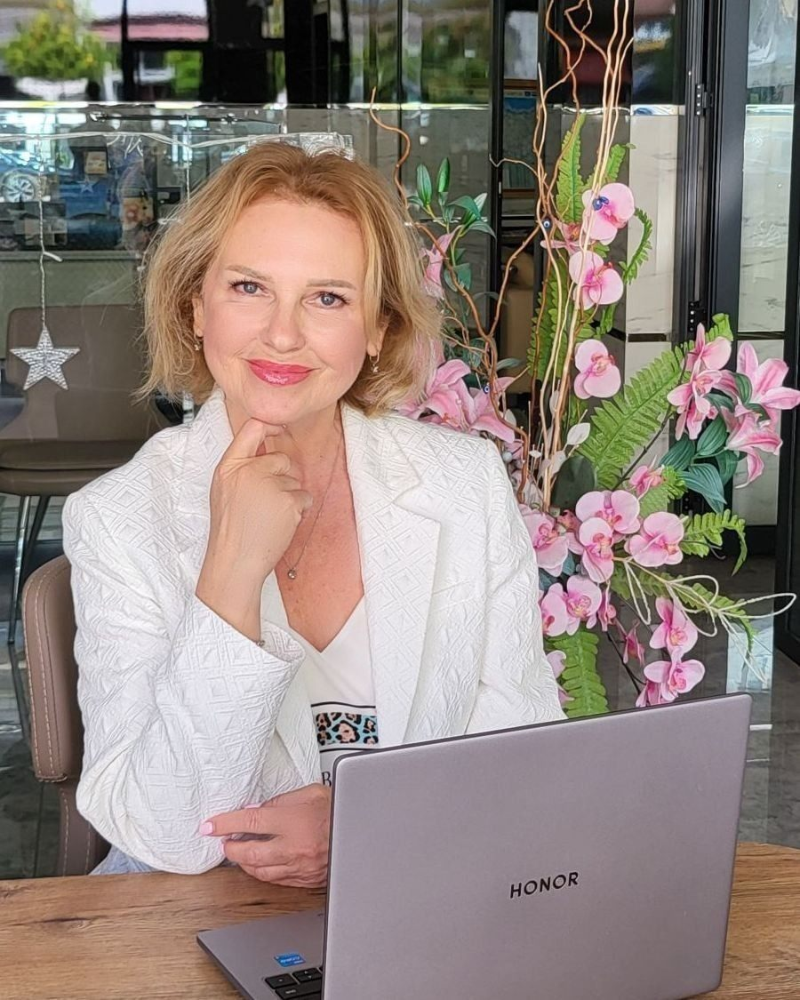
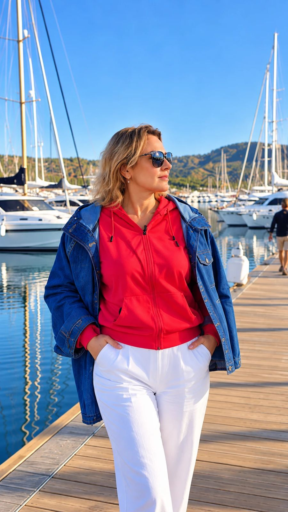
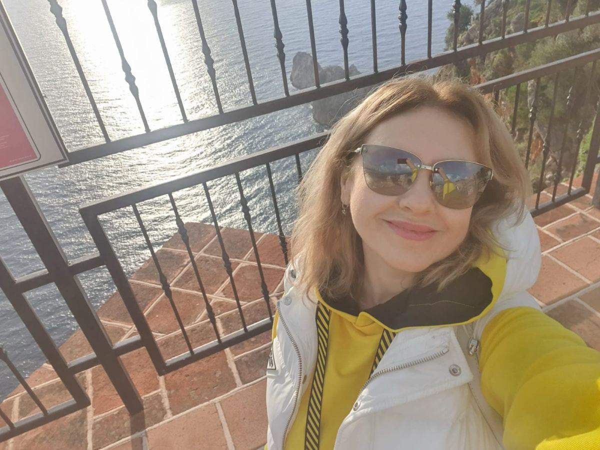
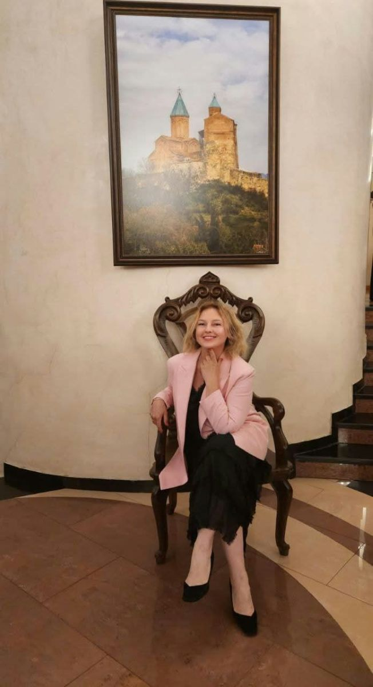
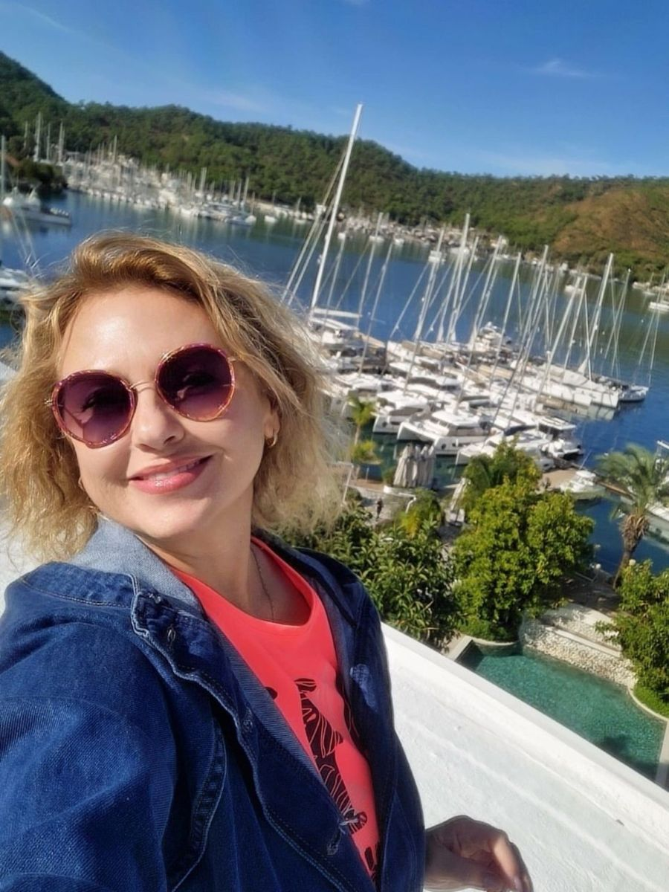

Обо мне
Кто я и почему пишу именно вам

Двадцать лет моя жизнь связана с недвижимостью. Агентство мы построили вдвоём с партнёром, так что цену настоящему партнёрству я знаю не понаслышке. А само агентство для меня — настоящее детище. Я растила его, как растят ребёнка: с любовью, с бессонными ночами и с гордостью за каждый шаг. А рядом с ним всегда жили и другие проекты — такой уж у меня характер.
За эти годы я стала экспертом и знаю этот бизнес изнутри — до последней запятой в договоре. Я знаю, что значит отвечать за всё. Команда, клиенты, риски — всё одновременно и всё на тебе. И я знаю, как меняется рынок: быстрее, чем успеваешь перестроиться. Иногда быстрее, чем успеваешь допить утренний кофе.
Ещё эти годы научили меня трём вещам: считать, договариваться и не верить красивым картинкам. Даже если на картинке море.
Поэтому новое направление я выбирала так, как выбирала бы объект для самого требовательного клиента: придирчиво, с вопросами и без розовых очков. Мне было нужно дело, которое не держит меня в одной стране и в котором пригодится весь мой опыт. Так я пришла в партнёрский бизнес в wellness.
Я сама недавно в этом деле, поэтому не стану пересказывать чужие истории успеха. Покажу свои шаги, а идти ли рядом — решите сами.
Я рекомендую только то, что проверила сама.
О чём думают предприниматели
24% Чаще всего предприниматели называют главным мотивом свободу распоряжаться своим временем
Опрос предпринимателей, май 2026 · источник
Мне это близко. Только свобода времени не приходит сама — ни в своём деле, ни в новом. И нет, я не призываю закрывать своё дело и уходить в закат: я показываю, как строю ещё одно направление рядом со своим.
Почему wellness
Немного цифр о рынке wellness
7,5 трлн долларов
— мировая wellness-экономика в 2025 году, по оценке института. За год она выросла на 8,9%.
Global Wellness Institute, ноябрь 2026 · источник
Теперь, когда wellness-экономика восстановилась после пандемии, видно, насколько она неудержима как потребительский тренд.
Это цифры о рынке, а не обещание дохода. Просто я привыкла выбирать дело с открытыми глазами.
Честно о главном
Кому это подойдёт — и кому точно нет
Подойдёт, если вы
- ведёте своё дело — за границей или дома — и присматриваетесь к новому;
- хотите работать онлайн — из своего офиса, из аэропорта или из любой точки мира, где есть интернет;
- любите учиться и щедро делитесь тем, чему научились;
- умеете сами собрать свой день: начальника над душой здесь не будет, но и дисциплину за вас никто не выстроит;
- любите людей, движение и дорогу.
Не подойдёт, если вы
- ищете волшебную кнопку и ждёте, что всё сделают за вас, — таких кнопок я не встречала ни в одном деле;
- не готовы общаться с людьми и рассказывать о себе;
- хотите, чтобы вам заранее пообещали результат, — я так не делаю.
Что за дело
Скажу прямо: это партнёрский, он же сетевой, бизнес
Знаю, что у многих предпринимателей эти слова вызывают усмешку. Поэтому без тумана — что здесь есть на самом деле.
- Онлайн. Встречи, презентации и обучение, как правило, проходят в Zoom. Подключиться к встрече можно откуда угодно — был бы ноутбук и полчаса тишины.
- Готовая основа. Международная компания, логистика и обучение уже есть. А в центре — не баночки, а приборы для дома и здорового образа жизни.
- Два пути. Здесь можно рекомендовать приборы, а можно строить команду. Мой путь — второй: я знакомлю предпринимателей с компанией и помогаю новым партнёрам освоиться. Но оба пути держатся на самих приборах: без них не было бы и дела.
- Наставники и люди. Я учусь у наставников и езжу на семинары. Люди здесь для меня не меньшая ценность, чем само дело.
- Вход — через покупку. Чтобы стать партнёром, нужно купить приборы компании. Сумму я назову прямо, до любого решения. Без мелкого шрифта.
Чтобы вы знали, с кем будете говорить
Моя жизнь
Мне за 50, и я живу ту жизнь, которую когда-то себе нарисовала. Живу в кайф — по-другому и не скажешь.
Моё место силы — море. Каждое утро начинается с прогулки вдоль берега под шум волн, потом витамины и, конечно, кофе и завтрак — это святое.
Я сама себе хозяйка и сама строю свой календарь. Но без встреч, переговоров, клиентов и моей команды жизнь была бы мне просто неинтересна. Я всё это по-настоящему люблю.
А ещё мне важно самой решать, где и когда работать. Поэтому и дела я выбираю такие, которые можно вести из любой страны. Захочу — поеду с семьёй, захочу — одна. Куда и когда — решаю я.
Работать с удовольствием и жить со вкусом — так у меня было всегда, ещё со времён агентства.

Прогулка у моря
Моё место силы — море Вечерний Стамбул
Вечерний Стамбул
В путешествии
Выходной Отдых у моря
Отдых у моря
Фото на первом экране — из моей ИИ-фотосессии, в галерее — настоящие снимки.
Как начать
Три спокойных шага
- Напишите мне в Telegram или WhatsApp. Можно одной фразой: «Хочу познакомиться». Можно просто «Привет» — я пойму.
- Я отвечу сама — не бот и не менеджер — и приглашу на онлайн-встречу на 30–40 минут. Расскажу о себе, о компании и об условиях. Кофе — с вас, ответы — с меня.
- Вы спокойно решаете сами. Если идея не откликнется — это нормально: без обид и без звонков «ну что, подумали?».
Без недомолвок
Честные вопросы
Это сетевой бизнес?
Да. И мне важно, чтобы вы услышали это от меня сразу, а не догадались потом.
Это пирамида?
Справедливый вопрос — я задавала его сама, и не один раз. Главный признак пирамиды: деньги приходят от взносов новых участников, а не от продажи реальных товаров. Вход здесь — тоже покупка, так что вопрос законный. На встрече я покажу документы компании о приборах и о том, из чего складывается вознаграждение партнёров, а выводы вы сделаете сами. Я за то, чтобы проверять, а не верить.
Почему вы не называете компанию?
Потому что сначала вы знакомитесь со мной. Компанию можно проверить по документам, а человека, с которым предстоит работать, — только поговорив. Название и документы вы получите раньше, чем понадобится что-то решать.
Нужно ли что-то покупать — на старте и каждый месяц?
На старте — да. Вход — это покупка приборов компании: вы получаете их, пользуетесь сами и рассказываете людям о своём опыте. Так это дело и устроено. Точную сумму и состав покупки назову, как только спросите.
А вот обязательных ежемесячных покупок нет — ни чтобы оставаться партнёром, ни чтобы получать вознаграждение. Это я тоже говорю сразу.
Нужно ли продавать знакомым?
Ходить по знакомым с каталогом не придётся. Но скажу честно: рекомендовать приборы — это и есть продажи, просто без прилавка. Можно идти этим путём, а можно строить команду, но без общения с людьми не работает ни один из них. Как это выглядит в жизни, покажу на встрече.
Сколько времени это занимает?
Универсального ответа нет. Я покажу, сколько времени уходит у меня — на планёрки, звонки и встречи, — а вы решите, подходит ли вам такой ритм.
Гарантирован ли доход?
Нет. Гарантий дохода здесь нет. А если кто-то обещает вам обратное, это хороший повод насторожиться.
Можно ли заниматься из любой страны?
Дело ведётся онлайн, и партнёры в моей команде живут в разных странах. Условия в разных странах могут отличаться — для вашей я уточню заранее, чтобы обошлось без сюрпризов.
Давайте знакомиться
Пишите туда, где вам удобнее. Рассылок не будет — обещаю.
Пока не готовы писать — это нормально. Загляните в мой Telegram-канал: там я показываю, как живу и строю второе дело.
Instagram принадлежит компании Meta Platforms Inc., которая признана экстремистской организацией, её деятельность в России запрещена.